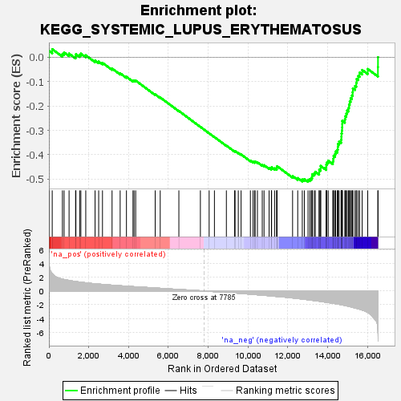
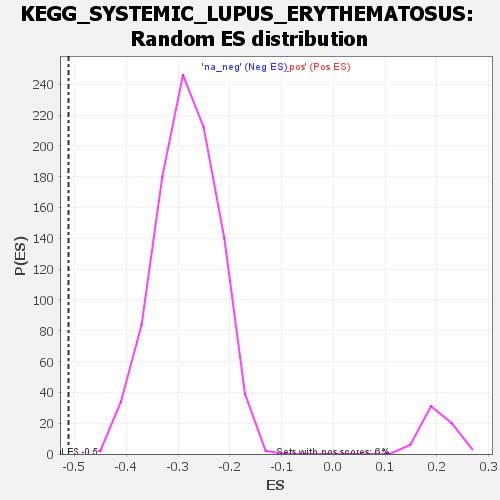

| | | Dataset | all_genes |
| Phenotype | NoPhenotypeAvailable |
| Upregulated in class | na_neg |
| GeneSet | KEGG_SYSTEMIC_LUPUS_ERYTHEMATOSUS |
| Enrichment Score (ES) | -0.5115231 |
| Normalized Enrichment Score (NES) | -1.8007731 |
| Nominal p-value | 0.0 |
| FDR q-value | 0.05780014 |
| FWER p-Value | 0.232 |
Table: GSEA Results Summary

Fig 1: Enrichment plot: KEGG_SYSTEMIC_LUPUS_ERYTHEMATOSUS
Profile of the Running ES Score & Positions of GeneSet Members on the Rank Ordered List
| SYMBOL | RANK IN GENE LIST | RANK METRIC SCORE | RUNNING ES | CORE ENRICHMENT | | 1 | FCGR2A | 7 | 4.010 | 0.0263 | No |
| 2 | FCGR2B | 166 | 2.516 | 0.0335 | No |
| 3 | C5 | 678 | 1.733 | 0.0140 | No |
| 4 | SSB | 762 | 1.674 | 0.0201 | No |
| 5 | H2BW2 | 1012 | 1.537 | 0.0152 | No |
| 6 | SNRPD3 | 1339 | 1.388 | 0.0046 | No |
| 7 | H3-3A | 1355 | 1.380 | 0.0129 | No |
| 8 | GRIN2B | 1544 | 1.308 | 0.0102 | No |
| 9 | C1S | 1605 | 1.286 | 0.0151 | No |
| 10 | C4B | 1850 | 1.198 | 0.0083 | No |
| 11 | C1R | 2318 | 1.052 | -0.0131 | No |
| 12 | C7 | 2499 | 1.006 | -0.0174 | No |
| 13 | H2AZ1 | 2690 | 0.960 | -0.0225 | No |
| 14 | H2AZ2 | 3171 | 0.852 | -0.0461 | No |
| 15 | C4A | 3578 | 0.767 | -0.0657 | No |
| 16 | MACROH2A2 | 3894 | 0.700 | -0.0802 | No |
| 17 | SNRPD1 | 4222 | 0.638 | -0.0958 | No |
| 18 | HLA-DRA | 4276 | 0.628 | -0.0948 | No |
| 19 | HLA-DMA | 4357 | 0.614 | -0.0956 | No |
| 20 | HLA-DOA | 5338 | 0.438 | -0.1523 | No |
| 21 | HLA-DPB1 | 5590 | 0.393 | -0.1650 | No |
| 22 | HLA-DMB | 6526 | 0.225 | -0.2203 | No |
| 23 | MACROH2A1 | 7607 | 0.036 | -0.2858 | No |
| 24 | HLA-DRB1 | 8047 | -0.043 | -0.3122 | No |
| 25 | RO60 | 8312 | -0.097 | -0.3277 | No |
| 26 | H2AC18 | 8912 | -0.208 | -0.3627 | No |
| 27 | HLA-DPA1 | 9322 | -0.293 | -0.3857 | No |
| 28 | HLA-DQB1 | 9349 | -0.299 | -0.3852 | No |
| 29 | H3-3B | 9510 | -0.330 | -0.3928 | No |
| 30 | H4C11 | 9651 | -0.364 | -0.3989 | No |
| 31 | H4C8 | 10118 | -0.469 | -0.4241 | No |
| 32 | H4C14 | 10252 | -0.501 | -0.4289 | No |
| 33 | H2BC9 | 10328 | -0.517 | -0.4300 | No |
| 34 | HLA-DRB5 | 10354 | -0.523 | -0.4280 | No |
| 35 | FCGR3A | 10472 | -0.554 | -0.4314 | No |
| 36 | H2AX | 10714 | -0.609 | -0.4420 | No |
| 37 | TRIM21 | 10804 | -0.631 | -0.4432 | No |
| 38 | H4C1 | 11059 | -0.692 | -0.4541 | No |
| 39 | SNRPB | 11175 | -0.727 | -0.4562 | No |
| 40 | ACTN1 | 11182 | -0.729 | -0.4517 | No |
| 41 | H2BC21 | 11333 | -0.770 | -0.4557 | No |
| 42 | H4C13 | 11441 | -0.796 | -0.4569 | No |
| 43 | HLA-DQA1 | 11444 | -0.798 | -0.4517 | No |
| 44 | H2AC25 | 11458 | -0.802 | -0.4472 | No |
| 45 | H3C4 | 12237 | -1.014 | -0.4877 | No |
| 46 | GRIN2A | 12495 | -1.097 | -0.4961 | No |
| 47 | C2 | 12724 | -1.175 | -0.5021 | No |
| 48 | H2BC12 | 12827 | -1.214 | -0.5002 | No |
| 49 | H4C12 | 13014 | -1.279 | -0.5030 | Yes |
| 50 | H2BC17 | 13107 | -1.313 | -0.4998 | Yes |
| 51 | H3C6 | 13182 | -1.345 | -0.4954 | Yes |
| 52 | ACTN4 | 13217 | -1.359 | -0.4884 | Yes |
| 53 | H2BC14 | 13229 | -1.363 | -0.4799 | Yes |
| 54 | H2BC3 | 13325 | -1.395 | -0.4764 | Yes |
| 55 | H4C2 | 13377 | -1.412 | -0.4701 | Yes |
| 56 | H2BC13 | 13571 | -1.489 | -0.4719 | Yes |
| 57 | H2BC11 | 13574 | -1.491 | -0.4621 | Yes |
| 58 | H3C12 | 13646 | -1.524 | -0.4562 | Yes |
| 59 | H2AJ | 13647 | -1.525 | -0.4461 | Yes |
| 60 | H2BC10 | 13921 | -1.634 | -0.4518 | Yes |
| 61 | H2BC5 | 13928 | -1.637 | -0.4412 | Yes |
| 62 | H4C5 | 13957 | -1.648 | -0.4319 | Yes |
| 63 | H3C3 | 14026 | -1.683 | -0.4249 | Yes |
| 64 | H2BC18 | 14259 | -1.793 | -0.4270 | Yes |
| 65 | H4C9 | 14285 | -1.801 | -0.4165 | Yes |
| 66 | H2BC7 | 14296 | -1.805 | -0.4051 | Yes |
| 67 | H3C7 | 14369 | -1.845 | -0.3972 | Yes |
| 68 | H3C1 | 14400 | -1.861 | -0.3866 | Yes |
| 69 | H2BC26 | 14486 | -1.895 | -0.3791 | Yes |
| 70 | H2BC4 | 14509 | -1.907 | -0.3677 | Yes |
| 71 | H3C14 | 14517 | -1.912 | -0.3554 | Yes |
| 72 | H2AC8 | 14573 | -1.939 | -0.3458 | Yes |
| 73 | H2AC7 | 14673 | -1.992 | -0.3385 | Yes |
| 74 | H3C10 | 14689 | -2.001 | -0.3261 | Yes |
| 75 | H3C11 | 14693 | -2.002 | -0.3129 | Yes |
| 76 | H2AC14 | 14713 | -2.016 | -0.3006 | Yes |
| 77 | H4C16 | 14727 | -2.025 | -0.2879 | Yes |
| 78 | H2AC4 | 14730 | -2.025 | -0.2745 | Yes |
| 79 | H4C4 | 14732 | -2.027 | -0.2611 | Yes |
| 80 | H2AC11 | 14862 | -2.108 | -0.2549 | Yes |
| 81 | H3C2 | 14885 | -2.125 | -0.2420 | Yes |
| 82 | H4C3 | 14934 | -2.159 | -0.2306 | Yes |
| 83 | H2BC6 | 14976 | -2.181 | -0.2185 | Yes |
| 84 | H2AC17 | 15046 | -2.223 | -0.2079 | Yes |
| 85 | H2AC19 | 15071 | -2.247 | -0.1943 | Yes |
| 86 | H2BC15 | 15107 | -2.270 | -0.1813 | Yes |
| 87 | H3C13 | 15151 | -2.304 | -0.1686 | Yes |
| 88 | H2AC12 | 15216 | -2.355 | -0.1568 | Yes |
| 89 | H2AC20 | 15254 | -2.386 | -0.1431 | Yes |
| 90 | H2AC15 | 15264 | -2.392 | -0.1277 | Yes |
| 91 | HLA-DOB | 15374 | -2.479 | -0.1178 | Yes |
| 92 | H2BC8 | 15434 | -2.515 | -0.1046 | Yes |
| 93 | ACTN3 | 15454 | -2.532 | -0.0889 | Yes |
| 94 | H2AC16 | 15535 | -2.604 | -0.0764 | Yes |
| 95 | H2AC13 | 15604 | -2.656 | -0.0628 | Yes |
| 96 | H2AC6 | 15731 | -2.781 | -0.0519 | Yes |
| 97 | C3 | 16011 | -3.132 | -0.0480 | Yes |
| 98 | H2AC21 | 16523 | -5.817 | -0.0403 | Yes |
| 99 | H3C8 | 16526 | -6.120 | 0.0004 | Yes |
Table: GSEA details [plain text format]

Fig 2: KEGG_SYSTEMIC_LUPUS_ERYTHEMATOSUS: Random ES distribution
Gene set null distribution of ES for KEGG_SYSTEMIC_LUPUS_ERYTHEMATOSUS